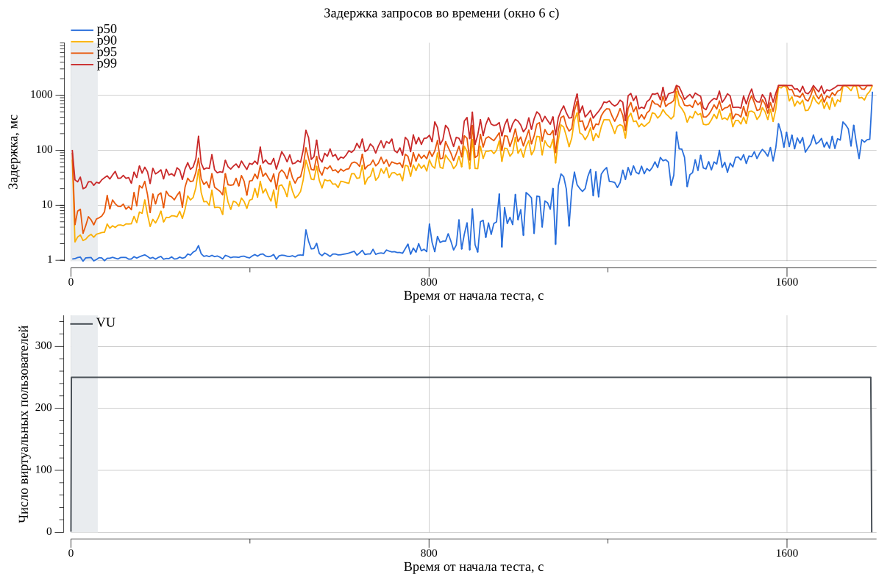
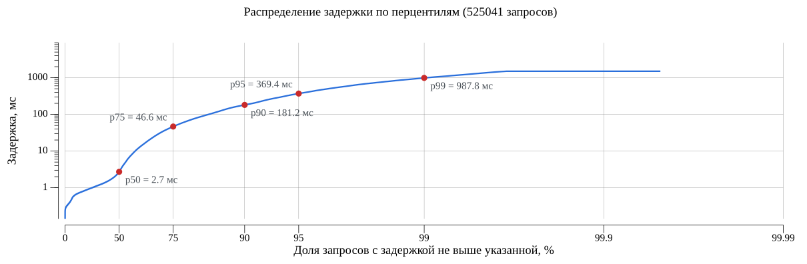
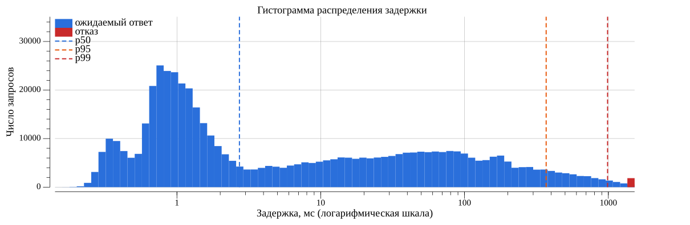
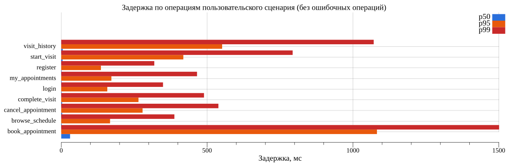
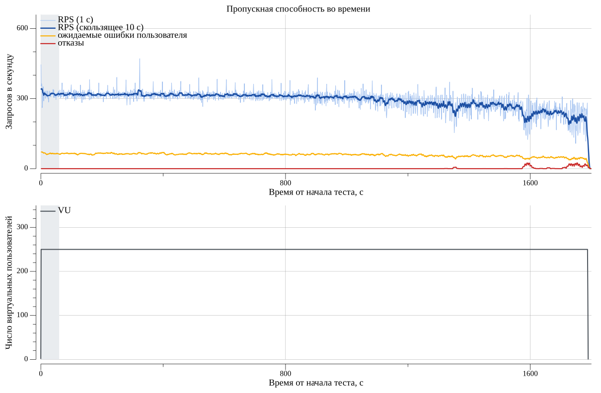
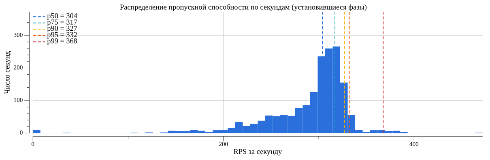
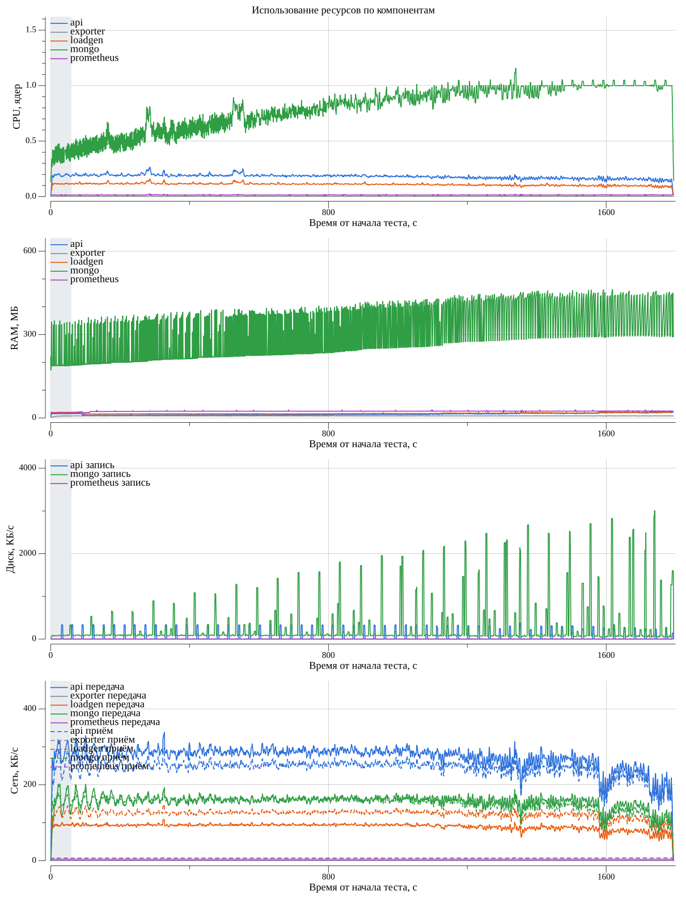

Длительная нагрузка, 20% ошибочных операций
Запросов525041
RPS среднее / медиана292 / 305
p50 / p95 задержки2.72 / 369 мс
p99 задержки988 мс
Отказы0.35%
Ошибочные операции20.10%
Ошибочных операций: задано 20%, фактически 20.1%. Отказы 0.35%. Дрейф p95 между первым и последним отрезком ×50.8, RPS ×0.74. Тренд памяти: api 22.6 МБ/ч, exporter 0.07 МБ/ч, loadgen 9.23 МБ/ч, mongo 372 МБ/ч, prometheus 4.20 МБ/ч.
Задержка
| Задержка, мс | count | min | mean | p50 | p75 | p90 | p95 | p99 | max |
|---|---|---|---|---|---|---|---|---|---|
| Все запросы | 525041 | 0.14 | 68.6 | 2.72 | 46.6 | 181 | 369 | 988 | 1508 |
| Корректные операции | 419517 | 0.44 | 81.7 | 6.75 | 61.9 | 223 | 439 | 1080 | 1508 |
| Ошибочные операции | 105524 | 0.14 | 16.6 | 0.60 | 1.31 | 47.5 | 96.3 | 245 | 1006 |



Операции пользовательского сценария
| Операция | count | min | mean | p50 | p75 | p90 | p95 | p99 | max | Отказы | Ошибочные |
|---|---|---|---|---|---|---|---|---|---|---|---|
| book_appointment | 81154 | 0.15 | 180 | 15.2 | 176 | 662 | 987 | 1501 | 1508 | 1.85% | 19.94% |
| browse_schedule | 81186 | 0.14 | 28.0 | 1.12 | 23.2 | 85.9 | 149 | 339 | 991 | 0.00% | 20.20% |
| cancel_appointment | 19055 | 0.45 | 52.8 | 2.40 | 54.9 | 170 | 262 | 501 | 1501 | 0.01% | 20.01% |
| complete_visit | 35387 | 0.41 | 49.5 | 2.34 | 51.1 | 162 | 243 | 449 | 1502 | 0.01% | 20.13% |
| login | 81207 | 0.42 | 32.0 | 1.36 | 33.9 | 94.4 | 158 | 348 | 1068 | 0.00% | 20.11% |
| my_appointments | 81073 | 0.42 | 37.2 | 1.59 | 37.5 | 105 | 173 | 474 | 979 | 0.00% | 20.21% |
| register | 20580 | 0.21 | 24.5 | 0.98 | 22.5 | 79.1 | 116 | 274 | 917 | 0.00% | 20.61% |
| start_visit | 44377 | 0.41 | 77.2 | 3.31 | 77.7 | 259 | 387 | 711 | 1502 | 0.23% | 20.01% |
| visit_history | 81022 | 0.16 | 84.5 | 2.24 | 57.6 | 283 | 488 | 992 | 1506 | 0.30% | 19.95% |

Пропускная способность
| Показатель | count | min | mean | p50 | p75 | p90 | p95 | p99 | max |
|---|---|---|---|---|---|---|---|---|---|
| RPS за секунду | 1800 | 0.00 | 292 | 305 | 317 | 328 | 333 | 368 | 471 |


Фазы нагрузки
| Участок | VU | RPS ср. | RPS p50 | RPS p5 | p50 мс | p95 мс | p99 мс | Отказы | CPU api | CPU mongo | RAM api, МБ | SLO |
|---|---|---|---|---|---|---|---|---|---|---|---|---|
| прогрев | 250 | 321 | 320 | 290 | 1.06 | 7.95 | 74.5 | 0.00% | 0.18 | 0.37 | 15.3 | да |
| стабильная нагрузка | 250 | 291 | 304 | 211 | 3.50 | 381 | 1002 | 0.37% | 0.18 | 0.81 | 13.8 | да |
Динамика длительной нагрузки
| Участок | VU | RPS ср. | RPS p50 | RPS p5 | p50 мс | p95 мс | p99 мс | Отказы | CPU api | CPU mongo | RAM api, МБ | SLO |
|---|---|---|---|---|---|---|---|---|---|---|---|---|
| 1/5 | 250 | 318 | 317 | 297 | 1.15 | 20.3 | 47.3 | 0.00% | 0.20 | 0.53 | 10.7 | да |
| 2/5 | 250 | 315 | 314 | 295 | 1.32 | 50.4 | 98.4 | 0.00% | 0.19 | 0.71 | 10.9 | да |
| 3/5 | 250 | 307 | 307 | 277 | 3.87 | 154 | 324 | 0.00% | 0.18 | 0.86 | 12.3 | да |
| 4/5 | 250 | 279 | 284 | 218 | 40.3 | 531 | 944 | 0.08% | 0.17 | 0.96 | 15.9 | нет |
| 5/5 | 250 | 235 | 247 | 142 | 108 | 1031 | 1501 | 2.16% | 0.16 | 0.99 | 19.2 | нет |
| Компонент | Тренд памяти на установившемся участке, МБ/ч |
|---|---|
| api | 22.6 |
| exporter | 0.07 |
| loadgen | 9.23 |
| mongo | 372 |
| prometheus | 4.20 |
Использование ресурсов
| Компонент | Метрика | min | max | mean | median | p95 |
|---|---|---|---|---|---|---|
| api | CPU, ядер | 0.01 | 0.27 | 0.18 | 0.18 | 0.21 |
| api | Троттлинг CPU, с/с | 0.00 | 0.00 | 0.00 | 0.00 | 0.00 |
| api | Чтение с диска, КБ/с | 0.00 | 0.00 | 0.00 | 0.00 | 0.00 |
| api | Запись на диск, КБ/с | 0.00 | 376 | 41.2 | 0.00 | 331 |
| api | RAM (working set), МБ | 2.84 | 27.6 | 13.8 | 12.4 | 21.1 |
| api | Сеть, приём КБ/с | 0.15 | 298 | 243 | 249 | 269 |
| api | Сеть, передача КБ/с | 0.09 | 338 | 272 | 281 | 302 |
| api | Процессы и потоки | 7.00 | 16.0 | 8.67 | 9.00 | 9.00 |
| exporter | CPU, ядер | 0.00 | 0.01 | 0.00 | 0.00 | 0.00 |
| exporter | Троттлинг CPU, с/с | 0.00 | 0.00 | 0.00 | 0.00 | 0.00 |
| exporter | Чтение с диска, КБ/с | 0.00 | 0.00 | 0.00 | 0.00 | 0.00 |
| exporter | Запись на диск, КБ/с | 0.00 | 0.00 | 0.00 | 0.00 | 0.00 |
| exporter | RAM (working set), МБ | 2.57 | 7.72 | 7.37 | 7.38 | 7.63 |
| exporter | Сеть, приём КБ/с | 0.35 | 0.55 | 0.48 | 0.48 | 0.50 |
| exporter | Сеть, передача КБ/с | 1.88 | 4.62 | 4.03 | 4.01 | 4.20 |
| exporter | Процессы и потоки | 4.00 | 5.00 | 4.99 | 5.00 | 5.00 |
| loadgen | CPU, ядер | 0.01 | 0.16 | 0.11 | 0.11 | 0.13 |
| loadgen | Троттлинг CPU, с/с | 0.00 | 0.00 | 0.00 | 0.00 | 0.00 |
| loadgen | Чтение с диска, КБ/с | 0.00 | 0.00 | 0.00 | 0.00 | 0.00 |
| loadgen | Запись на диск, КБ/с | 0.00 | 0.00 | 0.00 | 0.00 | 0.00 |
| loadgen | RAM (working set), МБ | 13.1 | 22.8 | 16.4 | 15.9 | 20.0 |
| loadgen | Сеть, приём КБ/с | 21.9 | 148 | 123 | 126 | 134 |
| loadgen | Сеть, передача КБ/с | 8.23 | 108 | 90.0 | 92.9 | 98.0 |
| loadgen | Процессы и потоки | 7.00 | 10.0 | 9.83 | 10.0 | 10.0 |
| mongo | CPU, ядер | 0.14 | 1.16 | 0.79 | 0.85 | 1.00 |
| mongo | Троттлинг CPU, с/с | 0.01 | 1.08 | 0.52 | 0.48 | 1.00 |
| mongo | Чтение с диска, КБ/с | 0.00 | 0.00 | 0.00 | 0.00 | 0.00 |
| mongo | Запись на диск, КБ/с | 26.8 | 3008 | 279 | 86.0 | 1573 |
| mongo | RAM (working set), МБ | 172 | 462 | 310 | 292 | 443 |
| mongo | Сеть, приём КБ/с | 0.11 | 190 | 151 | 156 | 169 |
| mongo | Сеть, передача КБ/с | 0.03 | 202 | 156 | 159 | 175 |
| mongo | Процессы и потоки | 39.0 | 152 | 103 | 101 | 148 |
| prometheus | CPU, ядер | 0.01 | 0.02 | 0.01 | 0.01 | 0.02 |
| prometheus | Троттлинг CPU, с/с | 0.00 | 0.00 | 0.00 | 0.00 | 0.00 |
| prometheus | Чтение с диска, КБ/с | 0.00 | 0.00 | 0.00 | 0.00 | 0.00 |
| prometheus | Запись на диск, КБ/с | 0.00 | 10.0 | 0.93 | 0.00 | 7.00 |
| prometheus | RAM (working set), МБ | 17.0 | 28.9 | 23.9 | 24.3 | 24.9 |
| prometheus | Сеть, приём КБ/с | 2.31 | 7.92 | 6.88 | 6.80 | 7.17 |
| prometheus | Сеть, передача КБ/с | 0.43 | 1.27 | 0.97 | 0.96 | 1.02 |
| prometheus | Процессы и потоки | 8.00 | 14.0 | 8.06 | 8.00 | 8.00 |

Коды ответов
| Код | Запросов |
|---|---|
| 200 | 302462 |
| 201 | 115203 |
| 400 | 36810 |
| 404 | 52532 |
| 409 | 16182 |
| 500 | 1852 |
Окружение прогона
| Компонент | Логические CPU | Квота CPU | Резерв RAM, МБ | Лимит RAM, МБ | Образ | ID образа |
|---|---|---|---|---|---|---|
| api | 0,1 | 1 | — | 512 | vitaline-lab4-api:20261112-213021-soak-err20-5g4i | 6a4010bb2944 |
| exporter | 6,7 | — | — | 64 | vitaline-lab4-exporter:1 | b58c2ecc0ca2 |
| loadgen | 4,5 | — | — | 2048 | vitaline-lab4-loadgen:1 | 0b0105a43a6d |
| mongo | 2,3 | 1 | — | 1024 | mongo:7 | 9896df581dfd |
| prometheus | 6,7 | — | — | 768 | prom/prometheus:v3.5.0 | 63805ebb8d2b |